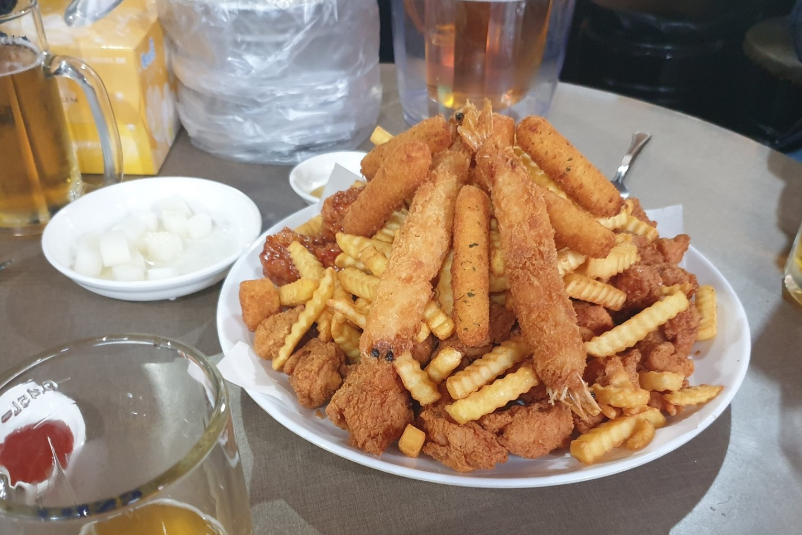

동네아저씨치킨
위치: 관악구 행운2길 16 (봉천동), 낙성대역 5번 출구 근처
정말 가성비 끝판왕의 치킨집입니다. 2만 8천원 정도 내면, 순살치킨, 새우튀김, 치즈스틱, 감자튀김이 산더미로 쌓여서 나오는 세트를 먹을 수 있습니다. 3명이서 먹으면 남고, 4명이서 먹어도 가까스로 다 먹고, 5~6명이서 먹어도 충분합니다. 초콜릿 치킨과 같은 특이한 메뉴도 있는데 도전해보세요!
만석곱창구이

위치: 관악구 봉천로 491-1 (봉천동), 서울대입구역 7번 출구 근처
곱창이 조금 호불호가 갈리는 음식이긴 하지만, 만약에 좋아하신다면 이 식당의 단골이 되긴 엄청 쉬울 겁니다. 퍽퍽하지도 않고 적당히 쫄깃쫄깃한 모듬곱창의 맛이 일품입니다. 볶음밥도 너무 맛있어요!
미친키친

위치: 관악구 남부순환로 1913 2층 (봉천동), 낙성대역 5번 출구 근처
'미친'은 Crazy가 아니라, 맛 '미'에 친할 '친'이라고 합니다. 돈까스와 함박스테이크, 규동이 맛있습니다. 돈까스는 먹고 싶은데, 고급 일식집을 가긴 부담스럽고, 그렇다고 분식집 돈까스를 먹고 싶지도 않을 때 가면 좋습니다.
온정돈까스

위치: 관악구 조원로 60 (신림동), 신대방역 2번 출구 근처
이곳에서는 청양고추보다 몇 배는 더 맵다는 '부트 졸로키아' 고추를 듬뿍 넣은 디진다 돈까스와, 산더미처럼 양이 많은 대왕 돈까스를 먹을 수 있답니다. 제한시간 안에 먹는 데에 성공하면 돈을 안 내도 된다고 하네요! 물론 평범한 음식이 아닌 만큼, 대부분 실패한다고 합니다. 물론 평범한 돈까스도 판매하는데, 양념도 좋고 양도 많아서 가성비가 좋습니다.